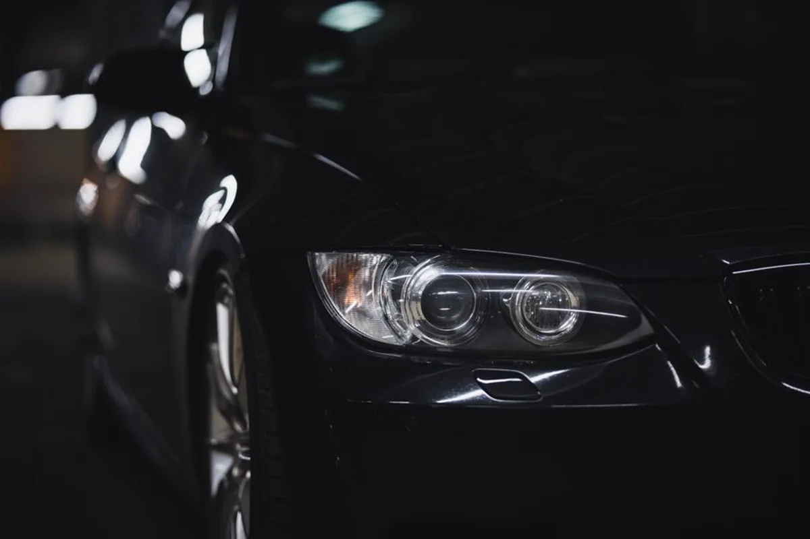
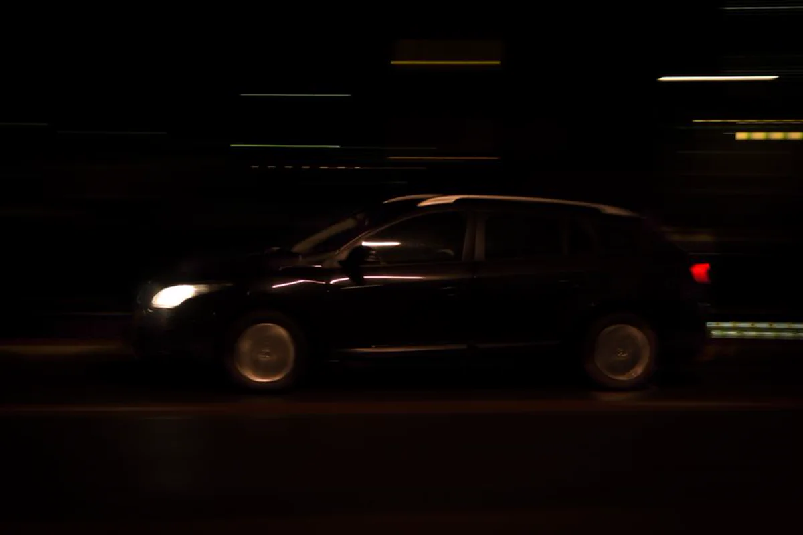

Projekt koncept / 02
VANTAKoncept faqeje për automjete
Koncept për markë veturash sportive, i ndërtuar mbi hapësirë, detaje të sakta dhe një foto të vetme të zgjedhur me kujdes.

VANTA / Koncepti 0201 / Përmbledhje
Fuqi,
e treguar qetë.
Shpejtësia nuk ka nevojë të bërtasë. Markat më të sigurta flasin më pak dhe thonë më shumë.
VANTA është markë e trilluar veturash sportive. Koncepti e prezanton veturën me sigurinë e një shtëpie luksi — pa zhurmë, pa tabela të mbingarkuara specifikash, pa dramë të huazuar.
Faqja hapet me një foto skulpturore dhe një ide me dy fjalë. Të dhënat teknike mbahen në rreshta të vegjël e të saktë, për ata që shikojnë më nga afër. Rezultati është studim përmbajtjeje: sa më pak flet ndërfaqja, aq më shumë flet vetura. Në telefon, kompozimi pritet ndryshe në vend që thjesht të zvogëlohet, që vetura të mbetet në qendër.
Qëllimi i dizajnit
Sipërfaqet gati të zeza dhe teksti argjendi krijojnë thellësi pa zbukurime. Një theks i vetëm blu shfaqet vetëm aty ku mund të klikohet. Faqosja ka hapësirë në çdo gjerësi, dhe lëvizjet janë mjaft të ngadalta sa të japin ndjesinë e peshës, jo të shpejtësisë.
Një foto, plotësisht
Një foto e vetme kryesore mban gjithë peshën emocionale, pa karusel që e dobëson.
Detajet si detaje
Specifikimet trajtohen si shkrim i imët: të vogla, të sakta dhe aty ku ia vlen t’i shohësh.
Lëvizje me masë
Kalimet janë të ngadalta dhe minimale, japin qetësi e jo spektakël.
02 / Pamja në ekrane
Një ide, e njëjtë
në çdo ekran.
Faqosja është menduar si një sistem i vetëm, jo si faqe kompjuteri e ngjeshur në telefon. Rendi, ritmi dhe karakteri ruhen nga ekrani i gjerë deri te 390 piksel.

03 / Gjuha vizuale
Errësirë me
saktësi.
Karboni dhe grafiti i japin faqes thellësi. Argjendi mban informacionin, ndërsa bluja shënon vetëm atë që mund të klikohet.
Velocity, redefined.
Të gjitha shkronjat ruhen në këtë faqe dhe përdoren njësoj në koncept dhe në faqe.
04 / Detajet
Lëvizje, dritë dhe
një subjekt i vetëm.
Fotot ndihmëse janë qëllimisht të pakta: njëra për lëvizjen, tjetra për saktësinë e vetë objektit.

Fotot janë ilustruese dhe përdoren sipas licencës përkatëse. Asnjë foto nuk paraqet punë për klient.
Fillo një projekt